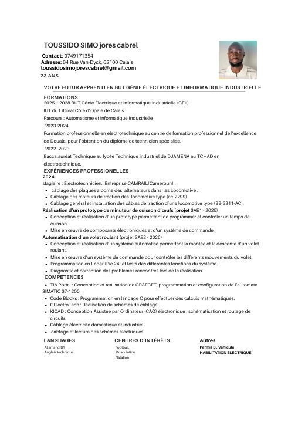
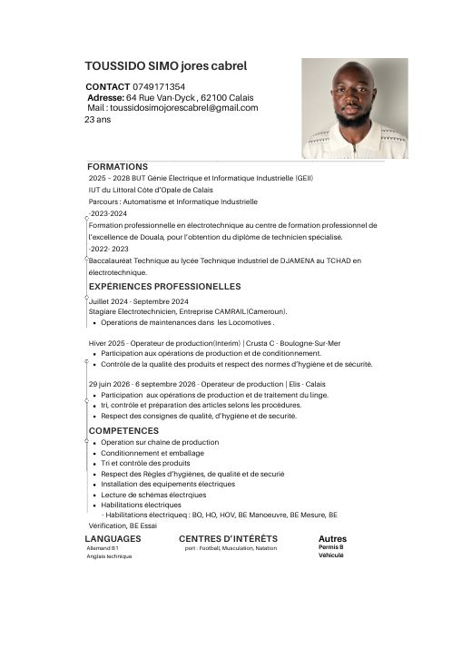
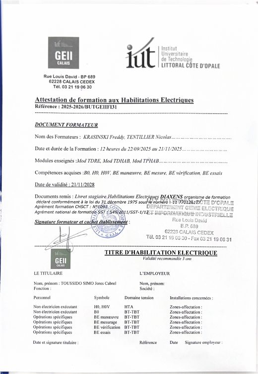

Télécharger mon CV
Trois versions de mon CV selon l'offre, ainsi que mes documents justificatifs.

CV alternance
Pour une candidature en contrat d'apprentissage ou de professionnalisation.
Télécharger (PDF)
Autres documents

Attestation d'habilitations électriques
B0, H0, H0V, BE manœuvre, BE mesure, BE vérification, BE essais. Valable jusqu'au 21 novembre 2028.
Télécharger (PDF)Dossier de fabrication, minuteur d'œuf
Cahier des charges, conception, schémas KiCad, programme VHDL, tests et améliorations possibles. Dossier rédigé en trinôme pour la SAÉ 1.
Télécharger (PDF)Une question sur mon profil ? Écrivez-moi à toussidosimojorescabrel@gmail.com ou appelez-moi au 07 49 17 13 54.